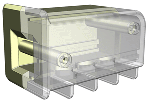

Estimated time to complete: 7–10 minutes
In this activity, you will create a linked mirror part using the non-exact option. You will then modify the linked mirror part to interface with the source part. Modifications made to a non-exact linked mirror part are not lost when the linked part updates from the source part.
Note that when you create the linked mirror part, you do not need an assembly part file. A linked mirror part is a standalone part which can be positioned independently from its source.

The translucent part is the linked mirror part with a number of modifications. This activity will examine how to create and modify the linked mirror part using the Create Linked Mirror Part command.
Open the Create a linked mirror part activity.